🧪 Расходник
 Бронзовый ключНеобычный · вес 0,1
Бронзовый ключНеобычный · вес 0,1
Бронзовый ключ
Позволяет отрывать запертые на ключ сундуки.
Водный кристалл пробужденияЭпический · вес 1
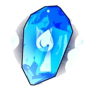
Водный кристалл пробуждения
Кристалл, содержащий энергию Мирового Древа. Пробуждает Пала Вода и раскрывает его потенциал.
 Грозовое облако возвращенияНеобычный · вес 1
Грозовое облако возвращенияНеобычный · вес 1
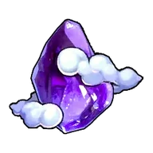
Грозовое облако возвращения
Позволяет переместиться к ближайшей базе. Не работает в подземельях и некоторых других зонах.
Драгоценный персик дружбыЭпический · вес 1
Драгоценный персик дружбы
Редкий волшебный плод. Бытует поверье, что съевший такой плод Пал откроет сердце человеку. Выбирайте с умом, какого Пала им угостить.
Драконий кристалл пробужденияЭпический · вес 1
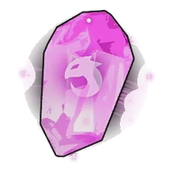
Драконий кристалл пробуждения
Кристалл, содержащий энергию Мирового Древа. Пробуждает Пала Дракон и раскрывает его потенциал.
 Заманчивая приманкаЭпический · вес 0,025
Заманчивая приманкаЭпический · вес 0,025
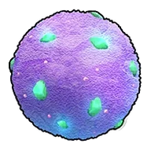
Заманчивая приманка
Приманка для привлечения Палов. С этой улучшенной приманкой в мини-игре индикатор становится больше, а количество получаемых трофеев увеличивается.
 Земной кристалл пробужденияЭпический · вес 1
Земной кристалл пробужденияЭпический · вес 1
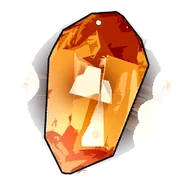
Земной кристалл пробуждения
Кристалл, содержащий энергию Мирового Древа. Пробуждает Пала Земля и раскрывает его потенциал.
 Золотой ключЭпический · вес 0,1
Золотой ключЭпический · вес 0,1
Золотой ключ
Позволяет отрывать запертые на ключ сундуки.
 Карта сокровищ
Карта сокровищ
Карта сокровищ
Старинная карта с отмеченным местом сокровища. При использовании добавляет метку на карте.
 Качественная приманкаНеобычный · вес 0,025
Качественная приманкаНеобычный · вес 0,025
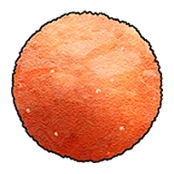
Качественная приманка
Рыболовная приманка для привлечения Палов. Улучшена, благодаря чему Палы легче клюют на приманку, а количество предметов, получаемых при рыбалке, совсем немного увеличивается.
 Качественное снадобье восстановленияРедкий · вес 0,2
Качественное снадобье восстановленияРедкий · вес 0,2
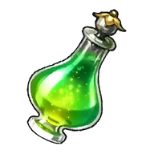
Качественное снадобье восстановления
Снадобье, постепенно исцеляющее раны. Высококачественное средство, хорошо восстанавливающее HP.
Качественные медикаментыРедкий · вес 0,2
Качественные медикаменты
Качественные медикаменты — средство от Слабость и Депрессия. Не восстанавливает HP.
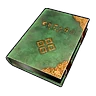
Книга высоких технологийНеобычный
Книга высоких технологий
Книга, в которой описаны поразительные технологии. При использовании даёт небольшое количество очков технологий.
Книга революционных технологийРедкий
Книга революционных технологий
Книга, в которой описаны передовые технологии. При использовании дает очки технологий.
 Книга технологий будущегоЭпический
Книга технологий будущегоЭпический
Книга технологий будущего
Книга, в которой описаны опережающие время технологии. При использовании дает много очков технологий.
 Книга технологий древностиЛегендарный
Книга технологий древностиЛегендарный
Книга технологий древности
Книга, в которой описаны утраченные древние технологии. При использовании даёт очки древних технологий.
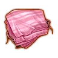
Костюм Зои на ХэллоуинЛегендарный

Костюм Зои на Хэллоуин
Костюм на Хэллоуин для Зои. Даже ей должно понравиться. Отнесите Зои!
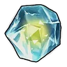
Кристалл обученияЛегендарный · вес 0,1
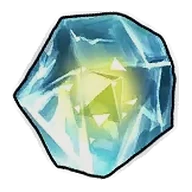
Кристалл обучения
Таинственный кристалл. Повышает уровень Пала на 1 при использовании.
 Крыловая энергоячейкавес 0,025
Крыловая энергоячейкавес 0,025
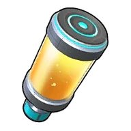
Крыловая энергоячейка
Энергия, используемая для полёта Крылатый ранец.
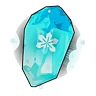
Ледяной кристалл пробужденияЭпический · вес 1
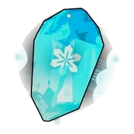
Ледяной кристалл пробуждения
Кристалл, содержащий энергию Мирового Древа. Пробуждает Пала Лёд и раскрывает его потенциал.
Любимый Пал заводчикаРедкий
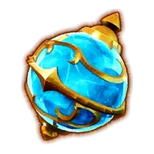
Любимый Пал заводчика
Сфера с дорогим для заводчика Палом. Верните её хозяину.
Маленький персик дружбыНеобычный · вес 1
Маленький персик дружбы
Небольшой плод, наполненный добротой. Бытует поверье, что съевший такой плод Пал откроет сердце человеку. Выбирайте с умом, какого Пала им угостить.
МедикаментыНеобычный · вес 0,2
Медикаменты
Необычное Медикаменты — помогает при Язва желудка и Перелом. Не восстанавливает HP.
 Медикаменты низкого качествавес 0,2
Медикаменты низкого качествавес 0,2
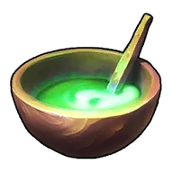
Медикаменты низкого качества
Медикаменты низкого качества — средство от Простуда, Растяжение и Обжора. При употреблении не восстанавливает HP.
 Молниеносный кристалл пробужденияЭпический · вес 1
Молниеносный кристалл пробужденияЭпический · вес 1
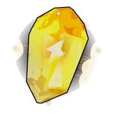
Молниеносный кристалл пробуждения
Кристалл, содержащий энергию Мирового Древа. Пробуждает Пала Молния и раскрывает его потенциал.
 Мощный рыболовный магнитРедкий · вес 0,1
Мощный рыболовный магнитРедкий · вес 0,1
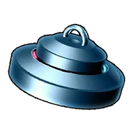
Мощный рыболовный магнит
Мощный магнит, необходимый для продвинутой добычи. С его помощью можно поднимать ресурсы и предметы со дна моря благодаря сильному магнитному полю.
 Небесная печатьЭпический · вес 1
Небесная печатьЭпический · вес 1

Небесная печать
[Коллаборация с Terraria] Печать с таинственными узорами. Возложите её на Алтарь для призыва, чтобы призвать существо чудовищной силы.
Небесная печать [Мастер]Легендарный · вес 1
Небесная печать [Мастер]
[Коллаборация с Terraria] Печать, покрытая таинственными узорами. Возложите её на Алтарь для призыва, чтобы призвать существо чудовищной силы.
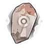
Нейтральный кристалл пробужденияЭпический · вес 1
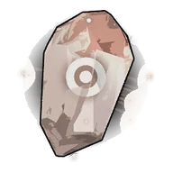
Нейтральный кристалл пробуждения
Кристалл, содержащий энергию Мирового Древа. Пробуждает Пала Нейтральный и раскрывает его потенциал.
 Огненный кристалл пробужденияЭпический · вес 1
Огненный кристалл пробужденияЭпический · вес 1
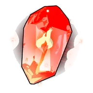
Огненный кристалл пробуждения
Кристалл, содержащий энергию Мирового Древа. Пробуждает Пала Огонь и раскрывает его потенциал.
 Памятный лоскут ткани ЗоиЛегендарный
Памятный лоскут ткани ЗоиЛегендарный
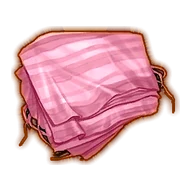
Памятный лоскут ткани Зои
Старая ткань с едва уловимым ароматом. Эта вещь хранит для Зои дорогие воспоминания.
 Питательный препаратНеобычный · вес 1
Питательный препаратНеобычный · вес 1
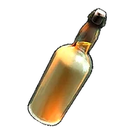
Питательный препарат
Питательный препарат, на некоторое время дающий сытость. Насыщенный напиток, содержащий концентрат из различных нутриентов. Уберегает от голода во время экспедиций.
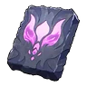
Плита Блазамут РюЭпический · вес 1
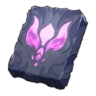
Плита Блазамут Рю
Плита с изображением пала «Блазамут Рю». Возложите её на Алтарь для призыва, чтобы призвать могущественного пала «Блазамут Рю» 55-го уровня.
 Плита Блазамут Рю (ультра)Легендарный · вес 1
Плита Блазамут Рю (ультра)Легендарный · вес 1
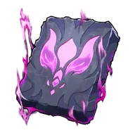
Плита Блазамут Рю (ультра)
Плита, излучающая силу пала «Блазамут Рю». Возложите её на Алтарь для призыва, чтобы призвать Блазамут Рю [ур. ??], чья сила внушает отчаяние.
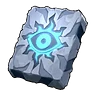
Плита БэллануарРедкий · вес 1
Плита Бэллануар
Плита с изображением пала «Бэллануар». Возложите её на Алтарь для призыва, чтобы призвать могущественного пала «Бэллануар» 35-го уровня.
 Плита Бэллануар ЛибероЭпический · вес 1
Плита Бэллануар ЛибероЭпический · вес 1
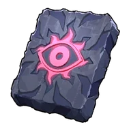
Плита Бэллануар Либеро
Плита с изображением пала «Бэллануар Либеро». Возложите её на Алтарь для призыва, чтобы призвать чрезвычайно могущественного пала «Бэллануар Либеро» 45-го уровня.
 Плита Бэллануар Либеро (ультра)Легендарный · вес 1
Плита Бэллануар Либеро (ультра)Легендарный · вес 1
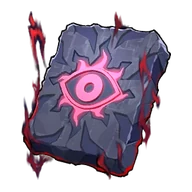
Плита Бэллануар Либеро (ультра)
Плита, излучающая силу пала «Бэллануар Либеро». Возложите её на Алтарь для призыва, чтобы призвать Бэллануар Либеро [ур. ??], чья сила внушает отчаяние.
 Плита ЗенолордаЭпический · вес 1
Плита ЗенолордаЭпический · вес 1
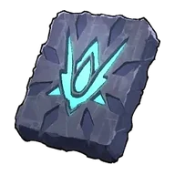
Плита Зенолорда
Плита с изображением пала «Зенолорд». Возложите её на Алтарь для призыва для призыва могучего Зенолорд [65-го уровня].
 Плита Зенолорда (ультра)Легендарный · вес 1
Плита Зенолорда (ультра)Легендарный · вес 1
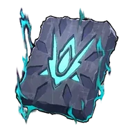
Плита Зенолорда (ультра)
Плита, излучающая силу пала «Зенолорд». Возложите её на Алтарь для призыва, чтобы призвать Зенолорд [ур. ??] с небывалой мощью.
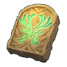
Плита ХарталисЭпический · вес 1
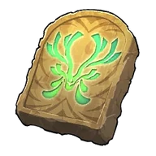
Плита Харталис
Плита с изображением пала «Харталис». Возложите её на Алтарь для призыва, чтобы призвать чрезвычайно могущественного пала «Харталис» 70-го уровня.
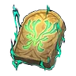
Плита Харталис (ультра)Легендарный · вес 1
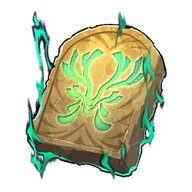
Плита Харталис (ультра)
Плита, излучающая силу пала «Харталис». Возложите её на Алтарь для призыва, чтобы призвать невероятно могущественного пала «Харталис» [ур. ??].
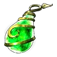
Плод жизниЛегендарный · вес 1
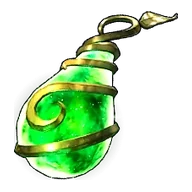
Плод жизни
Ценный и невероятно редкий плод. Немного повышает HP Пала.
 Плод мастерства воды: АкваджетНеобычный
Плод мастерства воды: АкваджетНеобычный
Плод мастерства воды: Акваджет
Используйте на Пале, чтобы он изучил навык Акваджет.
 Плод мастерства воды: Водяная бомбаРедкий
Плод мастерства воды: Водяная бомбаРедкий

Плод мастерства воды: Водяная бомба
Используйте на Пале, чтобы он изучил навык Водяная бомба.
 Плод мастерства воды: Водяная стенаЭпический
Плод мастерства воды: Водяная стенаЭпический

Плод мастерства воды: Водяная стена
Используйте на Пале, чтобы он изучил навык Водяная стена.
 Плод мастерства воды: Водяной выстрелНеобычный
Плод мастерства воды: Водяной выстрелНеобычный

Плод мастерства воды: Водяной выстрел
Используйте на Пале, чтобы он изучил навык Водяной выстрел.
 Плод мастерства воды: Водяные столпыЭпический
Плод мастерства воды: Водяные столпыЭпический

Плод мастерства воды: Водяные столпы
Используйте на Пале, чтобы он изучил навык Водяные столпы.
Плод мастерства воды: Гидроатака под давлениемРедкий
Плод мастерства воды: Гидроатака под давлением
Используйте на Пале, чтобы он изучил навык Гидроатака под давлением.
Плод мастерства воды: ГидрорезакЭпический

Плод мастерства воды: Гидрорезак
Используйте на Пале, чтобы он изучил навык Гидрорезак.
 Плод мастерства воды: ГидроструяЭпический
Плод мастерства воды: ГидроструяЭпический

Плод мастерства воды: Гидроструя
Используйте на Пале, чтобы он изучил навык Гидроструя.
 Плод мастерства воды: Кислотный дождьРедкий
Плод мастерства воды: Кислотный дождьРедкий

Плод мастерства воды: Кислотный дождь
Используйте на Пале, чтобы он изучил навык Кислотный дождь.
 Плод мастерства воды: Полоса брызгРедкий
Плод мастерства воды: Полоса брызгРедкий

Плод мастерства воды: Полоса брызг
Используйте на Пале, чтобы он изучил навык Полоса брызг.
 Плод мастерства воды: Пузырьковый выстрелРедкий
Плод мастерства воды: Пузырьковый выстрелРедкий

Плод мастерства воды: Пузырьковый выстрел
Используйте на Пале, чтобы он изучил навык Пузырьковый выстрел.
 Плод мастерства воды: ЦунамиЭпический
Плод мастерства воды: ЦунамиЭпический

Плод мастерства воды: Цунами
Используйте на Пале, чтобы он изучил навык Цунами.
 Плод мастерства дракона: Взрывная пушкаРедкий
Плод мастерства дракона: Взрывная пушкаРедкий

Плод мастерства дракона: Взрывная пушка
Используйте на Пале, чтобы он изучил навык Взрывная пушка.
 Плод мастерства дракона: Драконий взрывНеобычный
Плод мастерства дракона: Драконий взрывНеобычный

Плод мастерства дракона: Драконий взрыв
Используйте на Пале, чтобы он изучил навык Драконий взрыв.
 Плод мастерства дракона: Драконий метеорЭпический
Плод мастерства дракона: Драконий метеорЭпический

Плод мастерства дракона: Драконий метеор
Используйте на Пале, чтобы он изучил навык Драконий метеор.
 Плод мастерства дракона: Драконья пушкаНеобычный
Плод мастерства дракона: Драконья пушкаНеобычный
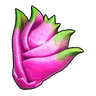
Плод мастерства дракона: Драконья пушка
Используйте на Пале, чтобы он изучил навык Драконья пушка.
 Плод мастерства дракона: Дыхание драконаРедкий
Плод мастерства дракона: Дыхание драконаРедкий

Плод мастерства дракона: Дыхание дракона
Используйте на Пале, чтобы он изучил навык Дыхание дракона.
 Плод мастерства дракона: Заряженный выстрелЭпический
Плод мастерства дракона: Заряженный выстрелЭпический

Плод мастерства дракона: Заряженный выстрел
Используйте на Пале, чтобы он изучил навык Заряженный выстрел.
 Плод мастерства дракона: КометаРедкий
Плод мастерства дракона: КометаРедкий

Плод мастерства дракона: Комета
Используйте на Пале, чтобы он изучил навык Комета.
 Плод мастерства дракона: Режущий лучЭпический
Плод мастерства дракона: Режущий лучЭпический

Плод мастерства дракона: Режущий луч
Используйте на Пале, чтобы он изучил навык Режущий луч.
 Плод мастерства земли: Грязевой выстрелНеобычный
Плод мастерства земли: Грязевой выстрелНеобычный

Плод мастерства земли: Грязевой выстрел
Используйте на Пале, чтобы он изучил навык Грязевой выстрел.
 Плод мастерства земли: Каменные копьяЭпический
Плод мастерства земли: Каменные копьяЭпический
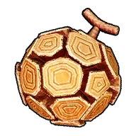
Плод мастерства земли: Каменные копья
Используйте на Пале, чтобы он изучил навык Каменные копья.
 Плод мастерства земли: Каменный залпНеобычный
Плод мастерства земли: Каменный залпНеобычный

Плод мастерства земли: Каменный залп
Используйте на Пале, чтобы он изучил навык Каменный залп.
 Плод мастерства земли: Каменный пульсЭпический
Плод мастерства земли: Каменный пульсЭпический

Плод мастерства земли: Каменный пульс
Используйте на Пале, чтобы он изучил навык Каменный пульс.
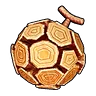
Плод мастерства земли: КамнемётНеобычный

Плод мастерства земли: Камнемёт
Используйте на Пале, чтобы он изучил навык Камнемёт.
 Плод мастерства земли: КамнепадЭпический
Плод мастерства земли: КамнепадЭпический

Плод мастерства земли: Камнепад
Используйте на Пале, чтобы он изучил навык Камнепад.
 Плод мастерства земли: Песчаные смерчиЭпический
Плод мастерства земли: Песчаные смерчиЭпический

Плод мастерства земли: Песчаные смерчи
Используйте на Пале, чтобы он изучил навык Песчаные смерчи.
 Плод мастерства земли: Песчаный вихрьРедкий
Плод мастерства земли: Песчаный вихрьРедкий

Плод мастерства земли: Песчаный вихрь
Используйте на Пале, чтобы он изучил навык Песчаный вихрь.
 Плод мастерства льда: АйсбергРедкий
Плод мастерства льда: АйсбергРедкий

Плод мастерства льда: Айсберг
Используйте на Пале, чтобы он изучил навык Айсберг.
 Плод мастерства льда: Алмазный водопадЭпический
Плод мастерства льда: Алмазный водопадЭпический

Плод мастерства льда: Алмазный водопад
Используйте на Пале, чтобы он изучил навык Алмазный водопад.
 Плод мастерства льда: Ледяная ракетаНеобычный
Плод мастерства льда: Ледяная ракетаНеобычный

Плод мастерства льда: Ледяная ракета
Используйте на Пале, чтобы он изучил навык Ледяная ракета.
 Плод мастерства льда: Ледяная стенаРедкий
Плод мастерства льда: Ледяная стенаРедкий

Плод мастерства льда: Ледяная стена
Используйте на Пале, чтобы он изучил навык Ледяная стена.
 Плод мастерства льда: Ледяное дыханиеРедкий
Плод мастерства льда: Ледяное дыханиеРедкий

Плод мастерства льда: Ледяное дыхание
Используйте на Пале, чтобы он изучил навык Ледяное дыхание.
Плод мастерства льда: Ледяной резакНеобычный
Плод мастерства льда: Ледяной резак
Используйте на Пале, чтобы он изучил навык Ледяной резак.
 Плод мастерства льда: Ледяной следЭпический
Плод мастерства льда: Ледяной следЭпический

Плод мастерства льда: Ледяной след
Используйте на Пале, чтобы он изучил навык Ледяной след.
 Плод мастерства льда: Ледяные пулиРедкий
Плод мастерства льда: Ледяные пулиРедкий
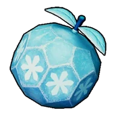
Плод мастерства льда: Ледяные пули
Используйте на Пале, чтобы он изучил навык Ледяные пули.
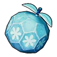
Плод мастерства льда: Морозный всплескЭпический

Плод мастерства льда: Морозный всплеск
Используйте на Пале, чтобы он изучил навык Морозный всплеск.
 Плод мастерства льда: Шип метелиЭпический
Плод мастерства льда: Шип метелиЭпический

Плод мастерства льда: Шип метели
Используйте на Пале, чтобы он изучил навык Шип метели.
Плод мастерства молнии: Вездесущая грозаЭпический
Плод мастерства молнии: Вездесущая гроза
Используйте на Пале, чтобы он изучил навык Вездесущая гроза.
 Плод мастерства молнии: Грозовая буряЭпический
Плод мастерства молнии: Грозовая буряЭпический

Плод мастерства молнии: Грозовая буря
Используйте на Пале, чтобы он изучил навык Грозовая буря.
Плод мастерства молнии: Грозовая линияРедкий
Плод мастерства молнии: Грозовая линия
Используйте на Пале, чтобы он изучил навык Грозовая линия.
 Плод мастерства молнии: Грозовое копьёНеобычный
Плод мастерства молнии: Грозовое копьёНеобычный

Плод мастерства молнии: Грозовое копьё
Используйте на Пале, чтобы он изучил навык Грозовое копьё.
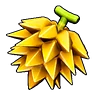
Плод мастерства молнии: Грозовой дождьЭпический

Плод мастерства молнии: Грозовой дождь
Используйте на Пале, чтобы он изучил навык Грозовой дождь.
Плод мастерства молнии: Грозовой ударЭпический
Плод мастерства молнии: Грозовой удар
Используйте на Пале, чтобы он изучил навык Грозовой удар.
 Плод мастерства молнии: Искровой выстрелНеобычный
Плод мастерства молнии: Искровой выстрелНеобычный

Плод мастерства молнии: Искровой выстрел
Используйте на Пале, чтобы он изучил навык Искровой выстрел.
 Плод мастерства молнии: Лазерный захватРедкий
Плод мастерства молнии: Лазерный захватРедкий
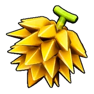
Плод мастерства молнии: Лазерный захват
Используйте на Пале, чтобы он изучил навык Лазерный захват.
 Плод мастерства молнии: ПлазмомётНеобычный
Плод мастерства молнии: ПлазмомётНеобычный

Плод мастерства молнии: Плазмомёт
Используйте на Пале, чтобы он изучил навык Плазмомёт.
Плод мастерства молнии: Тройная молнияРедкий
Плод мастерства молнии: Тройная молния
Используйте на Пале, чтобы он изучил навык Тройная молния.
 Плод мастерства молнии: Тройной разрядРедкий
Плод мастерства молнии: Тройной разрядРедкий

Плод мастерства молнии: Тройной разряд
Используйте на Пале, чтобы он изучил навык Тройной разряд.
Плод мастерства молнии: Удар молнииЭпический
Плод мастерства молнии: Удар молнии
Используйте на Пале, чтобы он изучил навык Удар молнии.
 Плод мастерства молнии: Шаровая молнияНеобычный
Плод мастерства молнии: Шаровая молнияНеобычный

Плод мастерства молнии: Шаровая молния
Используйте на Пале, чтобы он изучил навык Шаровая молния.
 Плод мастерства молнии: Шоковая волнаНеобычный
Плод мастерства молнии: Шоковая волнаНеобычный

Плод мастерства молнии: Шоковая волна
Используйте на Пале, чтобы он изучил навык Шоковая волна.
Плод мастерства огня: Вулканический дождьЭпический

Плод мастерства огня: Вулканический дождь
Используйте на Пале, чтобы он изучил навык Вулканический дождь.
 Плод мастерства огня: ИнферноЭпический
Плод мастерства огня: ИнферноЭпический

Плод мастерства огня: Инферно
Используйте на Пале, чтобы он изучил навык Инферно.
 Плод мастерства огня: Огненная воронкаЭпический
Плод мастерства огня: Огненная воронкаЭпический

Плод мастерства огня: Огненная воронка
Используйте на Пале, чтобы он изучил навык Огненная воронка.
 Плод мастерства огня: Огненная стенаРедкий
Плод мастерства огня: Огненная стенаРедкий

Плод мастерства огня: Огненная стена
Используйте на Пале, чтобы он изучил навык Огненная стена.
 Плод мастерства огня: Огненная стрелаНеобычный
Плод мастерства огня: Огненная стрелаНеобычный
Плод мастерства огня: Огненная стрела
Используйте на Пале, чтобы он изучил навык Огненная стрела.
 Плод мастерства огня: Огненное дыханиеРедкий
Плод мастерства огня: Огненное дыханиеРедкий

Плод мастерства огня: Огненное дыхание
Используйте на Пале, чтобы он изучил навык Огненное дыхание.
 Плод мастерства огня: Огненный выстрелНеобычный
Плод мастерства огня: Огненный выстрелНеобычный

Плод мастерства огня: Огненный выстрел
Используйте на Пале, чтобы он изучил навык Огненный выстрел.
 Плод мастерства огня: Огненный шарЭпический
Плод мастерства огня: Огненный шарЭпический
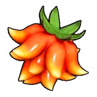
Плод мастерства огня: Огненный шар
Используйте на Пале, чтобы он изучил навык Огненный шар.
 Плод мастерства огня: Огненный штормРедкий
Плод мастерства огня: Огненный штормРедкий

Плод мастерства огня: Огненный шторм
Используйте на Пале, чтобы он изучил навык Огненный шторм.
 Плод мастерства огня: Расщеплённый огоньНеобычный
Плод мастерства огня: Расщеплённый огоньНеобычный

Плод мастерства огня: Расщеплённый огонь
Используйте на Пале, чтобы он изучил навык Расщеплённый огонь.
 Плод мастерства травы: Ветряной взрывЭпический
Плод мастерства травы: Ветряной взрывЭпический

Плод мастерства травы: Ветряной взрыв
Используйте на Пале, чтобы он изучил навык Ветряной взрыв.
 Плод мастерства травы: Ветряной клинокНеобычный
Плод мастерства травы: Ветряной клинокНеобычный

Плод мастерства травы: Ветряной клинок
Используйте на Пале, чтобы он изучил навык Ветряной клинок.
 Плод мастерства травы: Кольцевая лозаЭпический
Плод мастерства травы: Кольцевая лозаЭпический
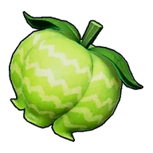
Плод мастерства травы: Кольцевая лоза
Используйте на Пале, чтобы он изучил навык Кольцевая лоза.
Плод мастерства травы: МультиклинокРедкий

Плод мастерства травы: Мультиклинок
Используйте на Пале, чтобы он изучил навык Мультиклинок.
 Плод мастерства травы: Отражающий листЭпический
Плод мастерства травы: Отражающий листЭпический

Плод мастерства травы: Отражающий лист
Используйте на Пале, чтобы он изучил навык Отражающий лист.
 Плод мастерства травы: Перекрестие ветраЭпический
Плод мастерства травы: Перекрестие ветраЭпический

Плод мастерства травы: Перекрестие ветра
Используйте на Пале, чтобы он изучил навык Перекрестие ветра.
 Плод мастерства травы: Семенная минаРедкий
Плод мастерства травы: Семенная минаРедкий

Плод мастерства травы: Семенная мина
Используйте на Пале, чтобы он изучил навык Семенная мина.
 Плод мастерства травы: Семенной пулемётНеобычный
Плод мастерства травы: Семенной пулемётНеобычный

Плод мастерства травы: Семенной пулемёт
Используйте на Пале, чтобы он изучил навык Семенной пулемёт.
 Плод мастерства травы: Солнечный взрывЭпический
Плод мастерства травы: Солнечный взрывЭпический

Плод мастерства травы: Солнечный взрыв
Используйте на Пале, чтобы он изучил навык Солнечный взрыв.
 Плод мастерства травы: Терновые лозыРедкий
Плод мастерства травы: Терновые лозыРедкий

Плод мастерства травы: Терновые лозы
Используйте на Пале, чтобы он изучил навык Терновые лозы.
 Плод мастерства травы: Травяной торнадоРедкий
Плод мастерства травы: Травяной торнадоРедкий

Плод мастерства травы: Травяной торнадо
Используйте на Пале, чтобы он изучил навык Травяной торнадо.
 Плод мастерства тьмы: АпокалипсисЭпический
Плод мастерства тьмы: АпокалипсисЭпический

Плод мастерства тьмы: Апокалипсис
Используйте на Пале, чтобы он изучил навык Апокалипсис.
 Плод мастерства тьмы: Духовное пламяНеобычный
Плод мастерства тьмы: Духовное пламяНеобычный
Плод мастерства тьмы: Духовное пламя
Используйте на Пале, чтобы он изучил навык Духовное пламя.
 Плод мастерства тьмы: Кошмарная сфераРедкий
Плод мастерства тьмы: Кошмарная сфераРедкий

Плод мастерства тьмы: Кошмарная сфера
Используйте на Пале, чтобы он изучил навык Кошмарная сфера.
 Плод мастерства тьмы: ПсихогравитацияЭпический
Плод мастерства тьмы: ПсихогравитацияЭпический

Плод мастерства тьмы: Психогравитация
Используйте на Пале, чтобы он изучил навык Психогравитация.
 Плод мастерства тьмы: Распространение тьмыНеобычный
Плод мастерства тьмы: Распространение тьмыНеобычный

Плод мастерства тьмы: Распространение тьмы
Используйте на Пале, чтобы он изучил навык Распространение тьмы.
 Плод мастерства тьмы: Стрелы тьмыРедкий
Плод мастерства тьмы: Стрелы тьмыРедкий
Плод мастерства тьмы: Стрелы тьмы
Используйте на Пале, чтобы он изучил навык Стрелы тьмы.
 Плод мастерства тьмы: Теневой взрывНеобычный
Плод мастерства тьмы: Теневой взрывНеобычный

Плод мастерства тьмы: Теневой взрыв
Используйте на Пале, чтобы он изучил навык Теневой взрыв.
 Плод мастерства тьмы: Тёмная пушкаНеобычный
Плод мастерства тьмы: Тёмная пушкаНеобычный

Плод мастерства тьмы: Тёмная пушка
Используйте на Пале, чтобы он изучил навык Тёмная пушка.
 Плод мастерства тьмы: Тёмный виспЭпический
Плод мастерства тьмы: Тёмный виспЭпический

Плод мастерства тьмы: Тёмный висп
Используйте на Пале, чтобы он изучил навык Тёмный висп.
 Плод мастерства тьмы: Тёмный выстрелНеобычный
Плод мастерства тьмы: Тёмный выстрелНеобычный

Плод мастерства тьмы: Тёмный выстрел
Используйте на Пале, чтобы он изучил навык Тёмный выстрел.
Плод мастерства тьмы: Тёмный лазерЭпический

Плод мастерства тьмы: Тёмный лазер
Используйте на Пале, чтобы он изучил навык Тёмный лазер.
 Плод мастерства тьмы: Ядовитый выстрелНеобычный
Плод мастерства тьмы: Ядовитый выстрелНеобычный

Плод мастерства тьмы: Ядовитый выстрел
Используйте на Пале, чтобы он изучил навык Ядовитый выстрел.
 Плод мастерства тьмы: Ядовитый душЭпический
Плод мастерства тьмы: Ядовитый душЭпический

Плод мастерства тьмы: Ядовитый душ
Используйте на Пале, чтобы он изучил навык Ядовитый душ.
 Плод мастерства: Воздушная пушкаНеобычный
Плод мастерства: Воздушная пушкаНеобычный
Плод мастерства: Воздушная пушка
Используйте на Пале, чтобы он изучил навык Воздушная пушка.
 Плод мастерства: Воздушные клинкиРедкий
Плод мастерства: Воздушные клинкиРедкий

Плод мастерства: Воздушные клинки
Используйте на Пале, чтобы он изучил навык Воздушные клинки.
 Плод мастерства: ПалобластЭпический
Плод мастерства: ПалобластЭпический

Плод мастерства: Палобласт
Используйте на Пале, чтобы он изучил навык Палобласт.
 Плод мастерства: СамоподрывРедкий
Плод мастерства: СамоподрывРедкий

Плод мастерства: Самоподрыв
Используйте на Пале, чтобы он изучил навык Самоподрыв.
 Плод мастерства: Священный взрывЭпический
Плод мастерства: Священный взрывЭпический

Плод мастерства: Священный взрыв
Используйте на Пале, чтобы он изучил навык Священный взрыв.
Плод мастерства: Силовая бомбаРедкий

Плод мастерства: Силовая бомба
Используйте на Пале, чтобы он изучил навык Силовая бомба.
 Плод мастерства: Силовой выстрелНеобычный
Плод мастерства: Силовой выстрелНеобычный

Плод мастерства: Силовой выстрел
Используйте на Пале, чтобы он изучил навык Силовой выстрел.
Плод силыЛегендарный · вес 1
Плод силы
Ценный и невероятно редкий плод. Немного повышает Атаку Пала.
Плод стойкостиЛегендарный · вес 1
Плод стойкости
Ценный и невероятно редкий плод. Немного повышает Защиту Пала.
 Подозрительный соквес 0,2
Подозрительный соквес 0,2
Подозрительный сок
Сок, улучшающий настроение. После употребления немного повышает скорость работы на короткое время, но слегка снижает уровень рассудка.
Практическая добыча руды IЛегендарный · вес 1
Практическая добыча руды I
Ценный том, раскрывающий секреты мастерства Добыча. После прочтения Пал получает постоянный бонус +1 к умению Добыча.
Практическая лесозаготовка IЛегендарный · вес 1
Практическая лесозаготовка I
Ценный том, раскрывающий секреты работы Рубка деревьев. При прочтении Пал получает постоянный бонус +1 к умению Рубка деревьев.
Практическая транспортировка IЛегендарный · вес 1
Практическая транспортировка I
Ценный том, раскрывающий секреты мастерства Транспортировка. После прочтения Пал получает постоянный бонус +1 к умению Транспортировка.
Практическая фармацевтика IЛегендарный · вес 1
Практическая фармацевтика I
Ценный том, раскрывающий секреты мастерства Фармацевтика. После прочтения Пал получает постоянный бонус +1 к умению Фармацевтика.
Практическая энергетика IЛегендарный · вес 1
Практическая энергетика I
Ценный том, раскрывающий секреты работы Генерация энергии. При прочтении Пал получает постоянный бонус +1 к умению Генерация энергии.
Практический полив IЛегендарный · вес 1
Практический полив I
Ценный том, раскрывающий секреты работы Полив. При прочтении Пал получает постоянный бонус +1 к умению Полив.
Практический посев семян IЛегендарный · вес 1
Практический посев семян I
Ценный том, раскрывающий секреты работы Посев семян. При прочтении Пал получает постоянный бонус +1 к умению Посев семян.
Практический сбор IЛегендарный · вес 1
Практический сбор I
Ценный том, раскрывающий секреты работы Сбор. При прочтении Пал получает постоянный бонус +1 к умению Сбор.
Практическое охлаждение IЛегендарный · вес 1
Практическое охлаждение I
Ценный том, раскрывающий секреты мастерства Охлаждение. После прочтения Пал получает постоянный бонус +1 к умению Охлаждение.
Практическое разжигание огня IЛегендарный · вес 1
Практическое разжигание огня I
Ценный том, раскрывающий секреты работы Разжигание огня. При прочтении Пал получает постоянный бонус +1 к умению Разжигание огня.
Практическое ремесло IЛегендарный · вес 1
Практическое ремесло I
Ценный том, раскрывающий секреты работы Ручная работа. При прочтении Пал получает постоянный бонус +1 к умению Ручная работа.
Практическое фермерство IЛегендарный · вес 1
Практическое фермерство I
Ценный том, раскрывающий секреты мастерства Фермерство. После прочтения Пал получает постоянный бонус +1 к умению Фермерство.
Превосходное снадобье восстановленияЭпический · вес 0,2
Превосходное снадобье восстановления
Снадобье, постепенно исцеляющее раны. Невероятно качественное средство, восстанавливающее HP прямо на глазах.
 Препарат для промывания мозговвес 0,2
Препарат для промывания мозговвес 0,2
Препарат для промывания мозгов
Препарат для промывания мозгов — высокоэффективное средство против нестабильных элементов. Не восстанавливает HP.
Простая приманкавес 0,025
Простая приманка
Простая рыболовная приманка для привлечения Палов. Требуется для рыбалки.
Простое снадобье восстановлениявес 0,2
Простое снадобье восстановления
Снадобье, которое со временем залечивает раны. Несмотря на низкое качество, всё же понемногу восстанавливает HP.
Ранговый фрукт ☆1Эпический · вес 1
Ранговый фрукт ☆1
Редкий волшебный фрукт. Позволяет повысить ранг Пала с ☆0 до ☆1.
Ранговый фрукт ☆2Эпический · вес 1
Ранговый фрукт ☆2
Редкий волшебный фрукт. Позволяет повысить ранг Пала с ☆1 до ☆2.
Ранговый фрукт ☆3Эпический · вес 1
Ранговый фрукт ☆3
Редкий волшебный фрукт. Позволяет повысить ранг Пала с ☆2 до ☆3.
Ранговый фрукт ☆4Эпический · вес 1
Ранговый фрукт ☆4
Редкий волшебный фрукт. Позволяет повысить ранг Пала с ☆3 до ☆4.
Расходуемый имплант: Алмазное телоЛегендарный
Расходуемый имплант: Алмазное тело
Имплант для изменения пассивных навыков Пала. При наличии в инвентаре на Операционный стол для Палов становится доступен выбор соответствующего пассивного навыка.
Расходуемый имплант: АскетЛегендарный
Расходуемый имплант: Аскет
Имплант для изменения пассивных навыков Пала. При наличии в инвентаре на Операционный стол для Палов становится доступен выбор соответствующего пассивного навыка.
Расходуемый имплант: БессмертиеЛегендарный
Расходуемый имплант: Бессмертие
Имплант для изменения пассивных навыков Пала. При наличии в инвентаре на Операционный стол для Палов становится доступен выбор соответствующего пассивного навыка.
Расходуемый имплант: Бог разрушенияЛегендарный
Расходуемый имплант: Бог разрушения
Имплант для изменения пассивных навыков Пала. При наличии в инвентаре на Операционный стол для Палов становится доступен выбор соответствующего пассивного навыка.
Расходуемый имплант: Божественная скоростьЛегендарный
Расходуемый имплант: Божественная скорость
Имплант для изменения пассивных навыков Пала. При наличии в инвентаре на Операционный стол для Палов становится доступен выбор соответствующего пассивного навыка.
Расходуемый имплант: ВампирЛегендарный
Расходуемый имплант: Вампир
Имплант для изменения пассивных навыков Пала. При наличии в инвентаре на Операционный стол для Палов становится доступен выбор соответствующего пассивного навыка.
Расходуемый имплант: Вечный двигательЛегендарный
Расходуемый имплант: Вечный двигатель
Имплант для изменения пассивных навыков Пала. При наличии в инвентаре на Операционный стол для Палов становится доступен выбор соответствующего пассивного навыка.
Расходуемый имплант: ВиртуозЛегендарный
Расходуемый имплант: Виртуоз
Имплант для изменения пассивных навыков Пала. При наличии в инвентаре на Операционный стол для Палов становится доступен выбор соответствующего пассивного навыка.
Расходуемый имплант: Демон-богЛегендарный
Расходуемый имплант: Демон-бог
Имплант для изменения пассивных навыков Пала. При наличии в инвентаре на Операционный стол для Палов становится доступен выбор соответствующего пассивного навыка.
Расходуемый имплант: Дьявольские рукиЛегендарный
Расходуемый имплант: Дьявольские руки
Имплант для изменения пассивных навыков Пала. При наличии в инвентаре на Операционный стол для Палов становится доступен выбор соответствующего пассивного навыка.
Расходуемый имплант: Живая стена святилищаЛегендарный
Расходуемый имплант: Живая стена святилища
Имплант для изменения пассивных навыков Пала. При наличии в инвентаре на Операционный стол для Палов становится доступен выбор соответствующего пассивного навыка.
Расходуемый имплант: Небесное скольжениеЛегендарный
Расходуемый имплант: Небесное скольжение
Имплант для изменения пассивных навыков Пала. При наличии в инвентаре на Операционный стол для Палов становится доступен выбор соответствующего пассивного навыка.
Расходуемый имплант: НебожительЛегендарный
Расходуемый имплант: Небожитель
Имплант для изменения пассивных навыков Пала. При наличии в инвентаре на Операционный стол для Палов становится доступен выбор соответствующего пассивного навыка.
Расходуемый имплант: Непреклонный духЛегендарный
Расходуемый имплант: Непреклонный дух
Имплант для изменения пассивных навыков Пала. При наличии в инвентаре на Операционный стол для Палов становится доступен выбор соответствующего пассивного навыка.
Расходуемый имплант: НянькаЛегендарный
Расходуемый имплант: Нянька
Имплант для изменения пассивных навыков Пала. При наличии в инвентаре на Операционный стол для Палов становится доступен выбор соответствующего пассивного навыка.
Расходуемый имплант: Обоюдоострый святой мечЛегендарный
Расходуемый имплант: Обоюдоострый святой меч
Имплант для изменения пассивных навыков Пала. При наличии в инвентаре на Операционный стол для Палов становится доступен выбор соответствующего пассивного навыка.
Расходуемый имплант: Особая конституцияЛегендарный
Расходуемый имплант: Особая конституция
Имплант для изменения пассивных навыков Пала. При наличии в инвентаре на Операционный стол для Палов становится доступен выбор соответствующего пассивного навыка.
Расходуемый имплант: Повелитель волнЛегендарный
Расходуемый имплант: Повелитель волн
Имплант для изменения пассивных навыков Пала. При наличии в инвентаре на Операционный стол для Палов становится доступен выбор соответствующего пассивного навыка.
Расходуемый имплант: Прыжок между измерениямиЛегендарный
Расходуемый имплант: Прыжок между измерениями
Имплант для изменения пассивных навыков Пала. При наличии в инвентаре на Операционный стол для Палов становится доступен выбор соответствующего пассивного навыка.
Расходуемый имплант: Рассада божественного древаЛегендарный
Расходуемый имплант: Рассада божественного древа
Имплант для изменения пассивных навыков Пала. При наличии в инвентаре на Операционный стол для Палов становится доступен выбор соответствующего пассивного навыка.
Расходуемый имплант: Тяжёлая броняЛегендарный
Расходуемый имплант: Тяжёлая броня
Имплант для изменения пассивных навыков Пала. При наличии в инвентаре на Операционный стол для Палов становится доступен выбор соответствующего пассивного навыка.
Реверсер ПаловЭпический
Реверсер Палов
Удивительное снадобье, способное изменить пол Пала. Используется на Операционный стол для Палов.
 Роскошная приманкаРедкий · вес 0,025
Роскошная приманкаРедкий · вес 0,025
Роскошная приманка
Рыболовная приманка для привлечения Палов. Улучшена, благодаря чему шкала в мини-игре становится немного больше, а количество предметов, получаемых при рыбалке, немного увеличивается.
 Святая вода Мирового ДреваРедкий · вес 0,1
Святая вода Мирового ДреваРедкий · вес 0,1
Святая вода Мирового Древа
Святая вода, наполненная энергией Мирового Древа. Очищает всё и пробуждает скрытую силу. При употреблении на некоторое время предотвращает исчезновение при контакте с деревьями и камнями Мирового Древа.
Серебряный ключРедкий · вес 0,1
Серебряный ключ
Позволяет отрывать запертые на ключ сундуки.
 Снадобье возрожденияЭпический · вес 1
Снадобье возрожденияЭпический · вес 1
Снадобье возрождения
Снадобье, возвращающее к жизни раненых Палов, потерявших способность двигаться.
 Снадобье восстановленияНеобычный · вес 0,2
Снадобье восстановленияНеобычный · вес 0,2
Снадобье восстановления
Снадобье, постепенно исцеляющее раны. Восстанавливает HP в умеренном объёме.
Снадобье очистки памятиРедкий · вес 0,2
Снадобье очистки памяти
Выпив это снадобье, игрок может сбросить очки характеристик. Не действует на Палов.
Сок загадочного грибавес 0,2
Сок загадочного гриба
Грибной сок, резко поднимающий настроение. На время значительно ускоряет работу, но заметно снижает уровень рассудка.
Спелый ранговый фруктЛегендарный · вес 1
Спелый ранговый фрукт
Редкий волшебный фрукт. Позволяет повысить ранг Пала на 1 ступень.
 Странный соквес 0,2
Странный соквес 0,2
Странный сок
Сок, заметно поднимающий настроение. На некоторое время увеличивает скорость работы, но снижает уровень рассудка.
Тайное снадобье выносливостиЭпический · вес 1
Тайное снадобье выносливости
Ценное снадобье, навсегда незначительно увеличивающее характеристику [Выносливость]. Не действует на Палов.
 Тайное снадобье гигантаЭпический · вес 1
Тайное снадобье гигантаЭпический · вес 1
Тайное снадобье гиганта
Ценное снадобье, навсегда незначительно увеличивающее характеристику [Вес]. Не действует на Палов.
 Тайное снадобье жизненной силыЭпический · вес 1
Тайное снадобье жизненной силыЭпический · вес 1
Тайное снадобье жизненной силы
Ценное снадобье, навсегда незначительно увеличивающее характеристику [HP]. Не действует на Палов.
Тайное снадобье трудаЭпический · вес 1
Тайное снадобье труда
Ценное снадобье, навсегда незначительно увеличивающее характеристику [Скорость работы]. Не действует на Палов.
 Тайное снадобье яростной атакиЭпический · вес 1
Тайное снадобье яростной атакиЭпический · вес 1
Тайное снадобье яростной атаки
Ценное снадобье, навсегда незначительно увеличивающее характеристику [Атака]. Не действует на Палов.
 Том обучения (большой)Редкий · вес 0,1
Том обучения (большой)Редкий · вес 0,1
Том обучения (большой)
Прочитав эту книгу, Пал получит большое кол-во опыта.
Том обучения (малый)вес 0,1
Том обучения (малый)
Прочитав эту книгу, Пал получит небольшое кол-во опыта.
 Том обучения (огромный)Эпический · вес 0,1
Том обучения (огромный)Эпический · вес 0,1
Том обучения (огромный)
Прочитав эту книгу, Пал получит значительное кол-во опыта.
 Том обучения (средний)Необычный · вес 0,1
Том обучения (средний)Необычный · вес 0,1
Том обучения (средний)
Прочитав эту книгу, Пал получит умеренное кол-во опыта.
 Травяной кристалл пробужденияЭпический · вес 1
Травяной кристалл пробужденияЭпический · вес 1
Травяной кристалл пробуждения
Кристалл, содержащий энергию Мирового Древа. Пробуждает Пала Трава и раскрывает его потенциал.
 Тёмный кристалл пробужденияЭпический · вес 1
Тёмный кристалл пробужденияЭпический · вес 1
Тёмный кристалл пробуждения
Кристалл, содержащий энергию Мирового Древа. Пробуждает Пала Тьма и раскрывает его потенциал.
Фирменное блюдо фермершиРедкий
Фирменное блюдо фермерши
Фирменное блюдо, приготовленное вручную хлопотливой фермершей. Источает аппетитный аромат.
Чудесное снадобье выносливостиЛегендарный · вес 1
Чудесное снадобье выносливости
Ценное снадобье, навсегда увеличивающее характеристику [Выносливость]. Не действует на Палов.
 Чудесное снадобье гигантаЛегендарный · вес 1
Чудесное снадобье гигантаЛегендарный · вес 1
Чудесное снадобье гиганта
Ценное снадобье, навсегда увеличивающее характеристику [Вес]. Не действует на Палов.
Чудесное снадобье жизненной силыЛегендарный · вес 1
Чудесное снадобье жизненной силы
Ценное снадобье, навсегда увеличивающее характеристику [HP]. Не действует на Палов.
 Чудесное снадобье трудаЛегендарный · вес 1
Чудесное снадобье трудаЛегендарный · вес 1
Чудесное снадобье труда
Ценное снадобье, навсегда увеличивающее характеристику [Скорость работы]. Не действует на Палов.
Чудесное снадобье яростной атакиЛегендарный · вес 1
Чудесное снадобье яростной атаки
Ценное снадобье, навсегда увеличивающее характеристику [Атака]. Не действует на Палов.